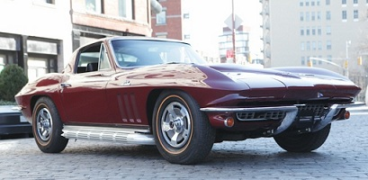

1966 Corvette Stingray 427/390hp Coupe

This 1966 Corvette 427/390HP Stingray Coupe remains in its original color of Milano Maroon over a Black Vinyl Interior.
The car came equipped from the factory wtih the following options: A01 Soft Ray Tinted Glass, All Windows, A82 Headrest,
G81 Positraction, L36 Optional 390HP, 427 Engine, M21 4 Speed Close Ratio Transmission, N14 Side Mount Exhaust System,
N32 Teakwood Steering Wheel, N36 Telescopic Steering Column, T01 Goldwall Tires 7.75 X 15 (Nylon Cord), V69 AM-FM Radio,
988 Milano Maroon, Std Black Vinyl. The car retains its matching numbers engine, which performs wonderfully with smooth
idle and a very even power delivery. The paint and interior are in excellent overall condition and the interior appears
to be original.